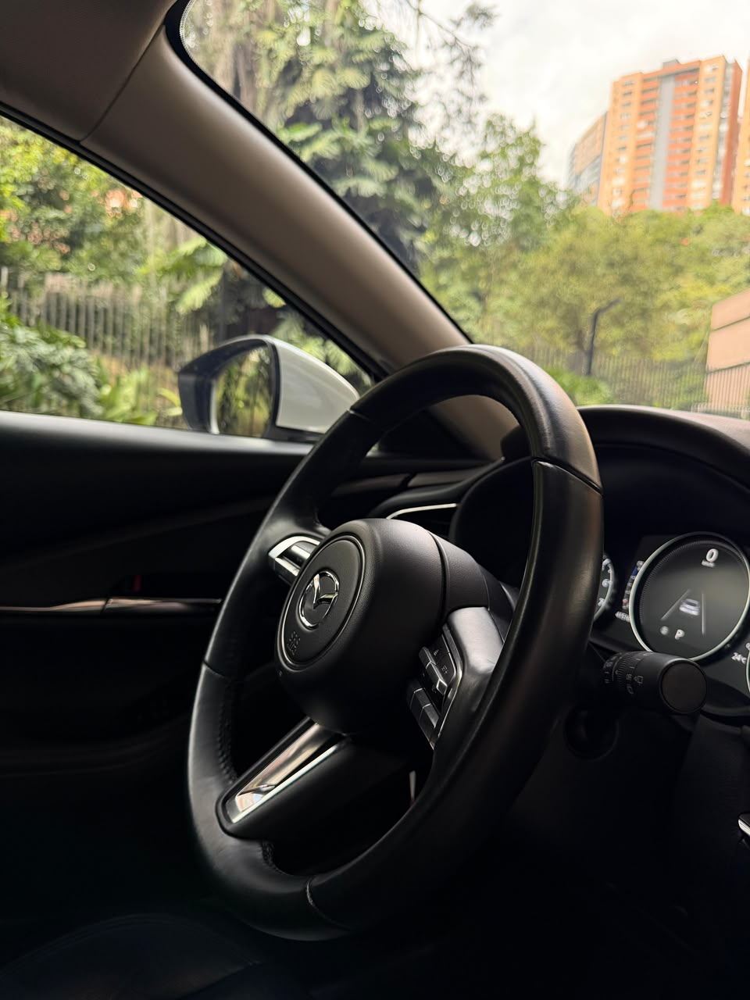

Nosotros
Samuel Sánchez — Fundador, CINQ
Existimos para conectar personas con oportunidades de valor, facilitando decisiones estratégicas a través de la confianza, el conocimiento y un acompañamiento cercano. Creemos que detrás de cada activo —una propiedad, un vehículo, una inversión— existe una historia, un objetivo y una oportunidad de crecimiento que merece entenderse antes de decidirse.
Trabajamos para conectar personas con oportunidades en bienes raíces, vehículos y otros activos estratégicos, con un servicio profesional, transparente y personalizado. A largo plazo, aspiramos a ser una marca referente en la intermediación de activos estratégicos en Colombia y Latinoamérica — reconocida no por el volumen de lo que representamos, sino por el criterio con el que lo hacemos.
CINQ nació en Medellín con una mirada puesta más allá de la ciudad. Con el tiempo, el mismo criterio que aplicamos hoy a una propiedad o un vehículo se extenderá hacia otras formas de oportunidad — pero cada paso se da cuando hay algo real que mostrar, no antes.
Fotografía de marca
